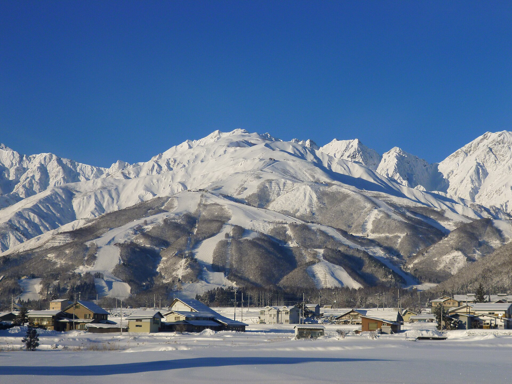

為什麼是這六個
2026 到 27 是聖嬰年，氣象廳預報日本海側的雪偏少。所以我們挑山頂高、下雪後最快積起來的雪場，出發前兩週再看一次雪況。

六個雪場
由北到南
點一張卡，看這個雪場的全部。選「我是」，每張卡就只告訴你該去哪一區。
從大町開上去
兩台 4WD，各坐四個人。07:30 前出發就不會卡在鏟雪車後面。國道 148 沿著三個湖走，湖邊背陽，黑冰看起來只是柏油在反光。
地圖：國土地理院淡色地圖。綠點是我們出發的大町站，圓點是六個雪場，依號碼由北到南。
07:00 大町
07:30 國道 148 北上
到雪場，停好
票，一天買一張
Hakuba Valley 三日券 ¥32,200，裡面含我們用不到的接駁巴士，而且要連續三天。各雪場的早鳥票一天一張，便宜又不用綁。
8 個人三天合計 ¥154,400。同樣的人買 Hakuba Valley 三日券要 ¥257,600。
八個人，省下來的日圓
萬
8 人各買栂池、八方、鹿島槍早鳥票 ¥19,300，和 Hakuba Valley 三日券 ¥32,200 的差。
2026–27 季票價，2026 年 10 月 28 日查核。
租雪具，五家
價格是 2026–27 季成人標準套裝三天，10 月 28 日查到的；Rhythm、Central 由五天價推算。Sunshine 線上預約 8 折只到 10 月 31 日。
先回答的
怎麼把這頁放到手機桌面？iPhone 用 Safari 開，按下方分享，選「加入主畫面」。Android 用 Chrome 開，按右上角選單，選「加到主畫面」。之後每次點開都是最新版。
聖嬰年要不要改期？不用先改。1 月 18 日已接近一月中，但暖冬可能讓雪季晚到；1 月初看各雪場的積雪公告，底部開不了就把三天集中在八方和栂池。
為什麼不買全山券？三日券 ¥32,200 要連續三天用，溢價是接駁巴士的錢，我們自駕用不到。一天一張早鳥票，三天 ¥19,300 上下，天氣不好那天還能不去。
新手可以去 Cortina 嗎？可以買票，但 Cortina 的初級道窄。新手走到隔壁乘鞍的若栗平原練，同一張票；高手從山頂切回 Cortina 樹林。
八方真的沒有新手區？有，只有咲花一區。停第 8 停車場，出車門就是緩坡，不要搭纜車往上。
租幾台車？兩台 4WD 休旅車，各坐四人，後車廂各放四副板。十人座大車重心高，雪地陡坡起步會打滑。長野雪路依法要無釘雪胎或雪鏈。
幾點出發？07:30 前。07:00 到 08:00 是鏟雪車作業時間，卡在後面只能開 20 km/h。
雪具在哪裡租？Sunshine 可以前一天下午在白馬站前先拿，中文 LINE 客服；Spicy 在八方、岩岳、栂池都有店，第一天鞋夾腳隔天就地換。
不滑雪的人去哪裡？岩岳山頂的 Mountain Harbor 和 City Bakery，晴天看白馬三山；鹿島槍的 Highland Spa 憑纜車券免費泡，窗外是青木湖。
這頁的數字從哪裡來？標高和坡度是 JapowDB，票價是各雪場官網、WAmazing、SURF&SNOW、Snownavi 的 2026–27 季公告，租金是各店 2026–27 價目表。全部在 10 月 28 日查過一次，出發前會再查。